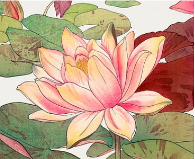

Goal
What defines a city, makes it come alive? Once you leave a place, what do you remember most when the memories begin to blur together?
For me, the first answer to come to mind is the people you meet. We are the essence and soul of a location. We breathe vibrant life into concrete arteries.
I have a friend who finds it funny how strangers often cold approach me to start conversations, far more than what she considers usual.
This was a quality of mine I’ve always disregarded; I didn’t think anything of it for years until she brought it up. Now I’m leaning into it to kickstart this project.
The aim is to document Seattle through my most memorable interactions and fleeting moments with strangers. I’ve been fortunate enough to speak to people from all circumstances
relatively often, which I hope brings enough diversity to my experiences to make for an interesting record. I believe these chance meetings not only shape how you see the world, but you as a person.
This project will be updated as I meet more people.
Why the name Lotus?
When I first planned my Japanese sleeve I planned the centerpiece to be a koi, but was quite indecisive on what to pair it with. I’ve spent many hours studying the motifs behind traditional Japanese tattooing and a favorite of mine is the lotus, so initially I wanted my sleeve to include one. My tattoo artist ended up picking the peony for me and I love how it turned out, but I do occasionally wonder how it would’ve looked had I insisted on my original preference.

I’ve always found the lotus to be beautiful, with intriguing symbolism behind it. Most people can appreciate the visual of a flower sprouting from mud. As someone who was raised Buddhist
(albeit not practicing), I also enjoy the religious imagery; it’s a constant in Dharmic art, where it carries themes of divinity, grace, and prosperity. I saw them everywhere in temples
and on paintings growing up. I see them on vases, tapestries, calendars. I own a jade pendant of the bodhisattva Guan Yin, embodiment of compassion and mercy, the carving of which depicts her sitting on a lotus.
Considering this, it’s easy to see how the lotus often rests at the back of my mind, along with the seeds of this project. In each of us I believe there lies a bit of divinity,
and this project tries to highlight those pieces I see in the people I meet. From the Wikipedia page on the
lotus in religious imagery
, “The lotus is the symbol of what is divine or immortal in humanity, and also symbolizes divine perfection”. When I began this project it was immediately obvious to me what I should call it.
Finally, I’ve been listening to “Sortilège”, by Preservation and Gabe ‘Nandez a lot lately. Unreal production and sampling, thought-provoking rhymes. My favorite song off the album is the closing track, titled “Lotus Flower”. Not much relation to the project there, the song deals more with themes of reincarnation (another Dharmic constant). I just wanted to be a little self indulgent.
Moments categorized by year.